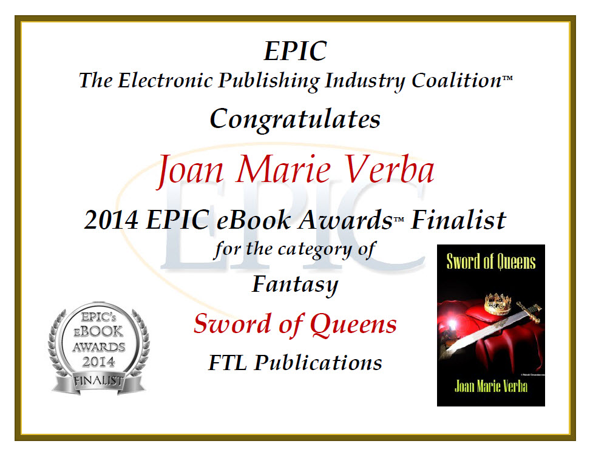
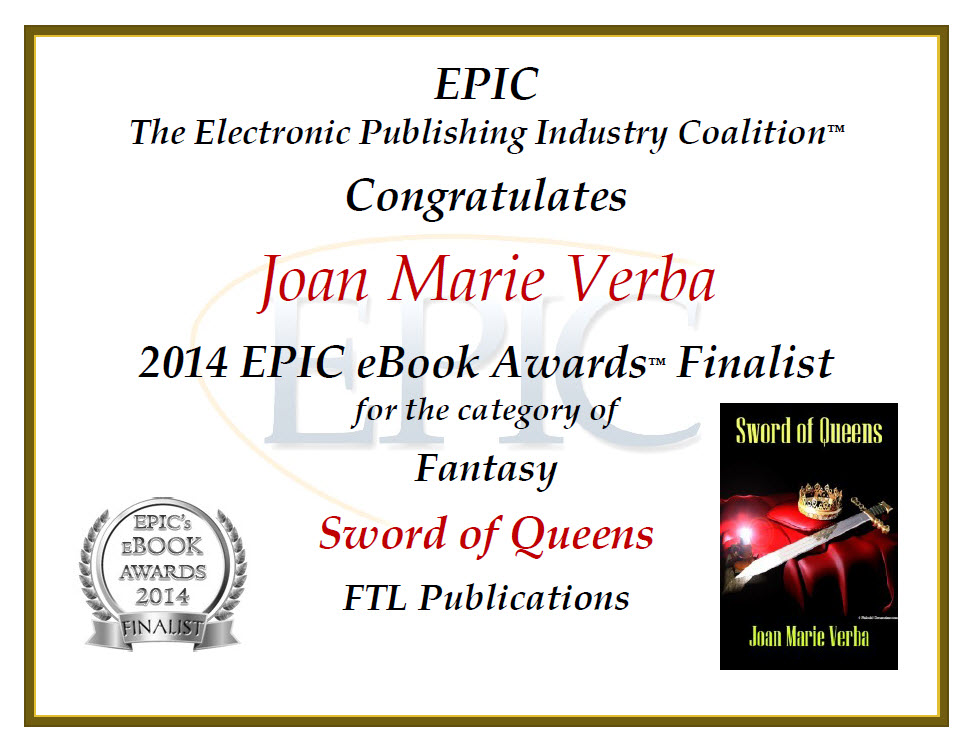

A teen without a home. A dangerous residence.
Can she survive one terrifying night
to secure her future?
Charlene Griffin never thought she'd be without a home. But when she's kicked out on her eighteenth birthday, she has no choice but to sleep inside an ominous Victorian mansion. And with the owner offering the estate to anyone who can spend a full night in the haunted property, Charlene decides to risk life and limb to get off the streets.
Refusing to heed the warnings of those sent running in fear for their lives, Charlene is confident she can last from sunset to sunrise. But she'll need all her wits about her to withstand the hours of terror, because these ghosts are determined to get rid of her.
Will Charlene outsmart her supernatural foes and make it to dawn?
Defying the Ghosts is an eerie YA haunted house story. If you like heart-racing action, fearless heroes, and survival adventures, then you'll love Joan Marie Verba's thrilling tale.
Buy Defying the Ghosts to explore forbidden shadowy corners today!
A ghost needs space to haunt, and a teenager kicked out of the house by a mother unable to love, lacking money for a rental, and looking for a safe place to stay doesn't have it to offer. But the haunted house offered to Charlene if she can last the night has lost its original family, driven other would-be claimants out by the aggressive late residents, and Charlene is too determined to give up on the only option she's been able to find. Instead of exorcisms or high-tech spirit guns firing special-effects rays, she tries a simpler method for dealing with ghostly threats: compassion, fueled by stubbornness and courage. Joan Marie Verba's Defying the Ghosts offers the eerie dangers expected of ghosts, but works through to a slime-less conclusion offering an elegant win to both the living and the dead. —Ruth Berman, Minnesota Fantasy Award recipient, Midwest Book Award winner for Bradamant's Quest
5-star review by Amy Powers for Readers' Favorite
Defying the Ghosts by Joan Marie Verba tells the suspenseful story of a young woman's creepy night in a
haunted house. After her mother kicks her out of her house on her eighteenth birthday, Charlene spends the next few weeks
scouting homeless shelters and camping out in the back room of the bookstore where she works. Charlene thinks she
might be in luck when she hears of a challenge: anyone who can spend the entire night in the local haunted house gets to
keep the house. It seems simple enough, but Charlene will soon risk her life on the most horrifying night of her life
as she
faces the multiple ghosts who do not want anyone else in their home.
For any reader who is looking for a new kind of horror story, Defying the Ghosts is a great choice for both
teens and
adults. I never knew it was possible to write a book that was simultaneously terrifying and heartwarming,
but Joan Marie
Verba has flawlessly managed to do just that. Charlene's story is eye-opening and brings to light the
everyday problems
and prejudices that...people face when they are trying to survive. The spooky moments of the haunted
house are
fast-paced, suspenseful, and overall fun to read. I was on the edge of my seat the whole time Charlene was
in the house,
and I could not put the book down. I can't wait to see what other horror tales Verba has in store.


 
